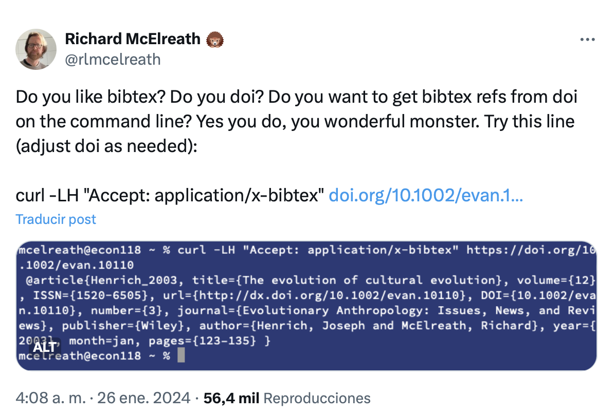

mkdir ~/binHow to Create a Bash Script to Extract Bibliographic References from DOIs
DOI
Bash
References
Dealing with references can feel like a real headache. However, recently I came across a fantastic solution by Richard Mclearn. This blog post is all about making your life easier with a simple tutorial for Mac users. I’ll show you how to set up a getref function that quickly grabs bibliographic information in BibTeX format from a DOI or a DOI URL.

Step-by-Step Guide
Step 1: Prepare Your Workspace
First, we need to create a dedicated folder to store your getref function. This not only helps in organizing your scripts but also in managing your PATH environment efficiently.
You can create the folder following this steps:
1.1. Open the terminal (cmd+space then type terminal).
1.2. Create a new folder named bin in your home directory:
type
and press return in your keyboard.
Note
I created the bin folder in my home directory. It will make it easier to access the script later on.
Step 2: Move to the bin Folder
Navigate to the newly created folder by typing
cd ~/binStep 3: Create the Script File
Create a new file named getref by typing
touch getrefThis file will be our script.
Step 4: Add the Script Code
Open the getref file in your favorite text editor. For simplicity, you can use Nano.
nano getrefIn the inside of the file, copy and paste the following code snippet. This script checks if a DOI or DOI URL is provided as an argument and then fetches the bibliographic information in BibTeX format.
#!/bin/bash
# Check if an argument is provided
if [ "$#" -ne 1 ]; then
echo "Usage: $0 <DOI or DOI URL>"
exit 1
fi
# Determine if the input is a DOI URL or just a DOI number
if [[ "$1" =~ ^https:// ]]; then
# Extract the DOI number from the URL
DOI=$(echo "$1" | sed 's|https://doi.org/||')
else
# Assume the input is just a DOI number
DOI="$1"
fi
# Extract and print the reference
curl -LH "Accept: application/x-bibtex" "https://doi.org/$DOI"Step 5: Make the Script Executable
Ensure the script can be executed by running in the terminal
chmod +x ~/bin/getref
Note
Notice that I used the path to my file, which is located in the bin folder in my home directory.
Step 6: Update Your Shell Configuration
Now, Open your shell configuration file (.zshrc for Zsh or .bashrc for Bash) using a text editor, e.g.,
nano ~/.zshrcYou will need to add ~/bin to your PATH. To do this, add the following line at the end of the file:
export PATH="$HOME/bin:$PATH"Save and close the file.
Step 7: Apply the Changes
Apply the changes to your current session by sourcing your configuration file:
source ~/.zshrcfor Zsh
or
source ~/.bashrcfor Bash.
How to Use Your New Script
To use your script, simply type getref in your termina followed by a DOI or a DOI URL. For example:
getref 10.1080/09687637.2023.2167649or
getref https://doi.org/10.1080/09687637.2023.2167649The script will fetch and display the bibliographic information in BibTeX format.
Done! This is a handy tool that simplifies the process of fetching bibliographic data. I hope you enjoy it. If you have any questions or suggestions, feel free to leave a comment below.